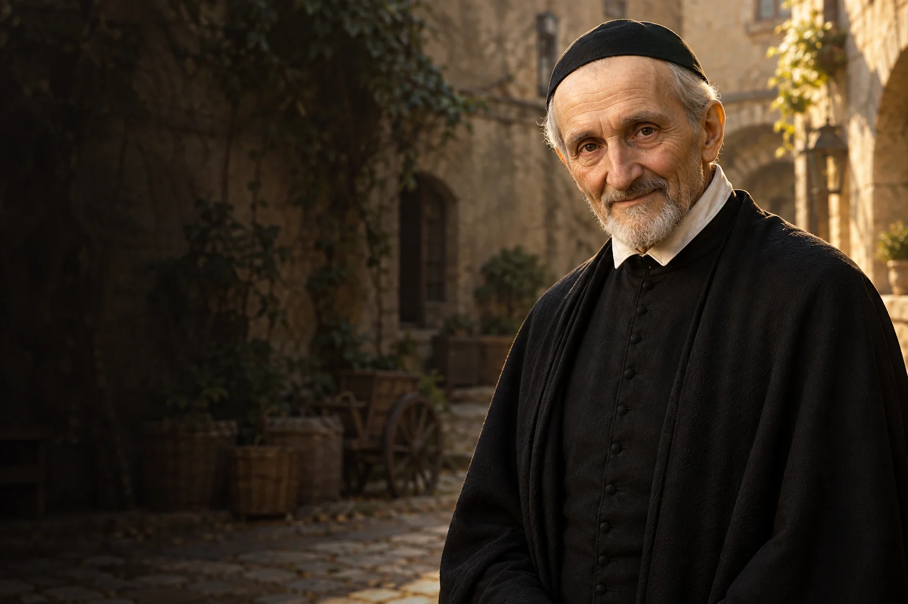

Pomoc na miarę
Zapytaj organizację pomagającą potrzebującym, jakie wsparcie będzie dla niej teraz przydatne.

1581–1660
Obchód liturgiczny: 27 września
Kapłan i organizator pomocy osobom ubogim.
Wincenty a Paulo organizował pomoc ludziom ubogim i chorym, łącząc działanie świeckich, kapłanów i sióstr miłosierdzia.
Poznaj historię jego życia →Miłosierdzie staje się trwalsze, gdy współczuciu towarzyszą współpraca oraz cierpliwa i odpowiedzialna organizacja.
Refleksja redakcji W Modlitwie.Przychodzi na świat w Pouy.
Organizuje pomoc chorym i potrzebującym.
Powstaje wspólnota kapłanów misyjnych.
Z Ludwiką de Marillac współtworzy nową wspólnotę.
Umiera 27 września.
Kościół ogłasza go świętym.
Około 3 min czytania · 5 rozdziałów
Wincenty urodził się 24 kwietnia 1581 roku w Pouy, w południowo-zachodniej Francji. Po studiach przyjął święcenia kapłańskie. Jego posługa rozwijała się stopniowo, a ważnym doświadczeniem stało się spotkanie z potrzebami ludzi żyjących na wsi. Biografia Wincentego pokazuje drogę od osobistego powołania do organizowania wspólnej odpowiedzi na ubóstwo.
Francja jego epoki była krajem głębokich nierówności i różnych potrzeb duszpasterskich. Życie Wincentego należy widzieć w tym historycznym otoczeniu. Jego późniejsze inicjatywy rodziły się ze spotkania z konkretnymi osobami i wspólnotami.
Pracując z rodziną de Gondi, Wincenty poznawał życie mieszkańców jej posiadłości. Dostrzegał zarówno niedostatek materialny, jak i brak dostępu do opieki duszpasterskiej. W Châtillon w 1617 roku zetknął się z chorą rodziną, której potrzebna była pomoc. Zachęcił innych do działania i do jego zorganizowania tak, by nie było tylko jednorazowym odruchem.
W opisie wydarzenia z Châtillon ważne są dwa elementy: współczucie oraz pytanie, jak zorganizować pomoc. Jedna rodzina mogła potrzebować wsparcia dłużej niż przez jeden dzień. Wspólne działanie pozwalało odpowiadać na tę potrzebę bardziej systematycznie.
Wokół parafialnej pomocy powstawały grupy zaangażowanych osób. Wincenty rozumiał, że dobre chęci potrzebują współpracy i odpowiedzialnego podziału zadań. W ten sposób modlitwa łączyła się z troską o chorych i ubogich. Model ten rozwijał się w kolejnych miejscach, angażując kobiety i mężczyzn różnych stanów.
Pomoc organizowana przez świeckich tworzyła przestrzeń dla osób, które nie należały do wspólnoty zakonnej. Ich udział pokazuje, że odpowiedzialność za potrzebujących nie jest zarezerwowana dla jednej grupy czy jednego rodzaju powołania.
Wincenty założył Zgromadzenie Misji, którego członkowie zajmowali się głoszeniem na terenach wiejskich i formacją duchowieństwa. Współpracował z Ludwiką de Marillac, która wspierała i odwiedzała wspólnoty charytatywne. W 1633 roku powstało zgromadzenie sióstr miłosierdzia. Ich posługa prowadziła do ludzi potrzebujących pomocy także poza murami klasztoru.
Ludwika de Marillac była współtwórczynią tego dzieła, a nie jedynie pomocnicą Wincentego. Jej wkład w formowanie sióstr i rozwijanie wspólnot miał własne znaczenie. Historia zgromadzenia jest historią współpracy i wspólnej odpowiedzialności.
Wincenty zmarł 27 września 1660 roku. Powstałe z jego inspiracji wspólnoty kontynuowały posługę w wielu krajach, a późniejsze stowarzyszenia charytatywne nawiązywały do jego przykładu. Jego historia przypomina, że pomoc wymaga zarówno dostrzeżenia konkretnej osoby, jak i cierpliwej organizacji. W Kościele wspominany jest 27 września.
Dzieło Wincentego żyje dalej dzięki ludziom, którzy podejmują pracę w zmienionych warunkach. Samo wspomnienie o założycielu nie zastępuje pytania o aktualne potrzeby: kto jest dziś samotny, chory lub pozbawiony potrzebnego wsparcia.
Współpraca, którą rozwijał, wymagała cierpliwości oraz zwracania uwagi na to, czego naprawdę potrzebuje dana osoba. Troska o ubogich obejmowała opiekę nad chorymi i organizację wsparcia na miejscu. Historia sióstr miłosierdzia pokazuje również znaczenie kobiet w tworzeniu trwałych form pomocy. Z tych doświadczeń wyrastały kolejne inicjatywy podejmowane przez wspólnoty.
Zapytaj organizację pomagającą potrzebującym, jakie wsparcie będzie dla niej teraz przydatne.

Zaproponuj bliskim wspólne zaangażowanie w konkretną lokalną inicjatywę.

Odwiedź lub zadzwoń do osoby chorej, jeśli tego sobie życzy.
Ojcze nasz, któryś jest w niebie, święć się imię Twoje; przyjdź królestwo Twoje; bądź wola Twoja jako w niebie, tak i na ziemi. Chleba naszego powszedniego daj nam dzisiaj; i odpuść nam nasze winy, jako i my odpuszczamy naszym winowajcom; i nie wódź nas na pokuszenie, ale nas zbaw ode złego. Amen.
Tradycyjny tekst modlitwy; utrwalony polski wariant.Ojcze nasz →